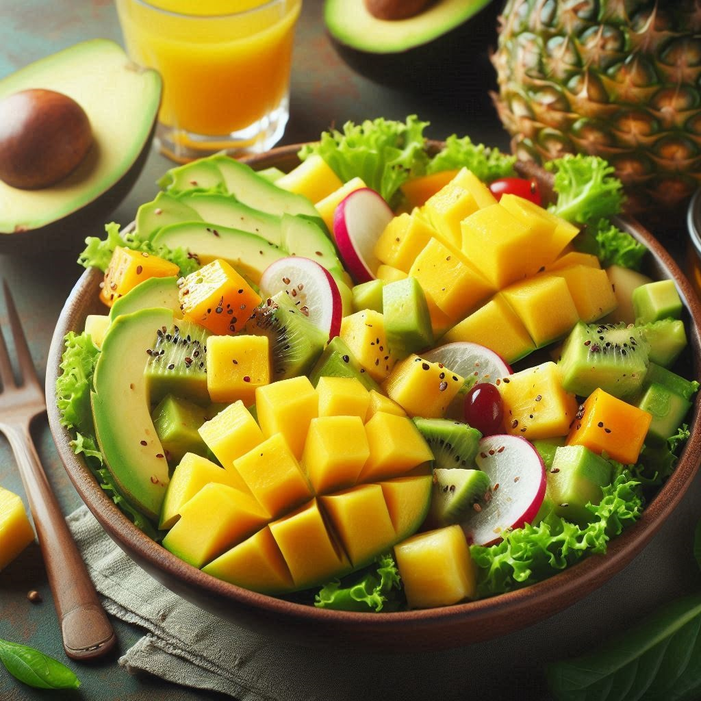

Ensalada Verde Energizante

Aporte Nutricional: Alta en fibra, vitaminas A, C y K, ácidos grasos omega-3 y antioxidantes. Favorece la digestión, la salud ocular y el sistema inmunológico.
Aporte Nutricional: Alta en fibra, vitaminas A, C y K, ácidos grasos omega-3 y antioxidantes. Favorece la digestión, la salud ocular y el sistema inmunológico.
Aporte Nutricional: Rica en vitamina C, calcio, hierro y antioxidantes. Promueve la salud ósea y cardiovascular, y aporta propiedades antiinflamatorias.
Aporte Nutricional: Alta en vitamina A y C, fibra, y antioxidantes. Apoya la salud digestiva, la piel y el sistema inmunológico.